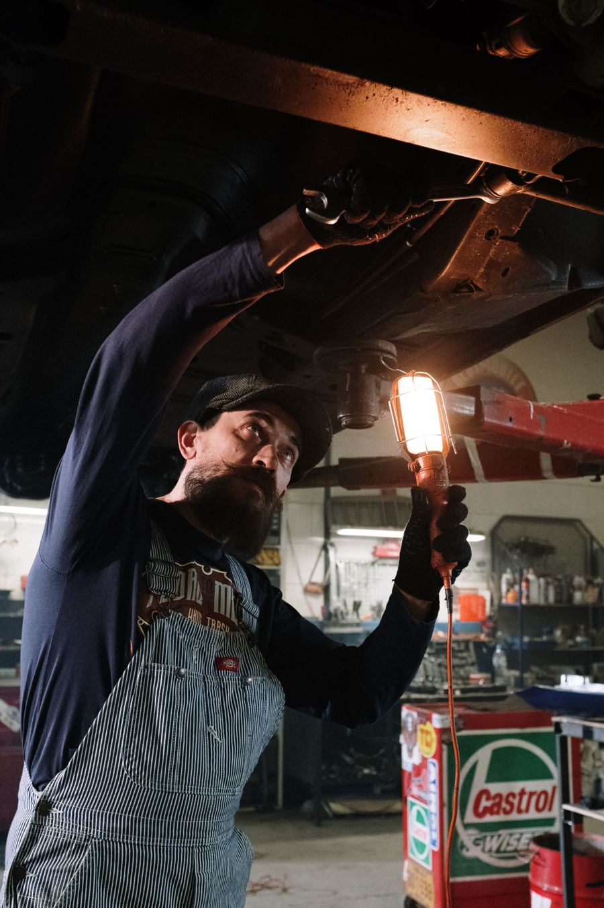
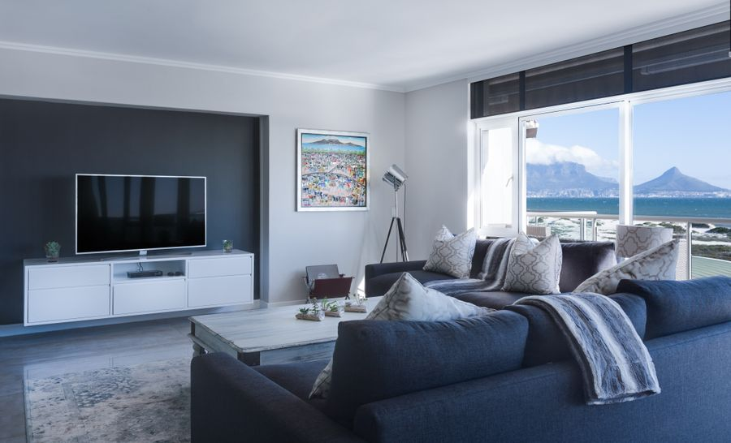

Makaleler
Tüketici haklarınızı tek platformda öğrenin
Her konuda önce üç makale görünür. Makaleler genel bilgi verir; hakem heyeti veya mahkemeye tek başınıza gitmeniz için yol göstermez. Kişisel dosyanız için platforma başvurmanız gerekir.
Kategori
Uçuş tazminatı
Gecikme, iptal, uçağa alınmama ve bagaj konularında yolcu haklarını anlatan yazılar. Önce makaleyi okuyun, ardından uçuş kaydınızı sorgulayın.


Uçuş iptal edilirse yolcu haklarım neler?
28 Ağustos 2026Biletiniz varken uçağa alınmazsanız haklarım neler?
21 Ağustos 2026
Bagaj gecikirse veya kaybolursa haklarım neler?
14 Ağustos 2026Aktarmalı uçuşu kaçırırsanız haklarım neler?
7 Ağustos 2026
Uçuş tazminatı başvurusunda hangi evraklar gerekir?
31 Temmuz 2026SHY-YOLCU kapsamında yolcu haklarım neler?
24 Temmuz 2026Havayolu bizden kaynaklı değil derse haklarım neler?
17 Temmuz 2026Rötarda otel, yemek ve transfer masraflarında haklarım neler?
10 Temmuz 2026Havayolu kuponu tazminat haklarımı kapatır mı?
3 Temmuz 2026Kategori
Sıfır araç ve değer kaybı
Sıfır araç alımında değişen parça, gizli ayıp, servis süresi, teslim gecikmesi, garanti itirazı ve kaza sonrası değer kaybı gibi konular ayrı makalelerde ele alınır. Değerlendirme belgelerinize göre yapılır.

Sıfır araçta değişen boya veya parça çıkarsa haklarım neler?
6 Eylül 2026
Sıfır araç serviste bekliyor, ikame verilmiyorsa haklarım neler?
5 Eylül 2026
Ayıplı sıfır araçta onarım, değişim ve iade haklarım neler?
4 Eylül 2026
Sıfır araç teslimatında hasar varsa haklarım neler?
3 Eylül 2026
Yetkili servis garanti dışı derse haklarım neler?
1 Eylül 2026
Sipariş edilen sıfır araç geç gelirse haklarım neler?
27 Ağustos 2026
Kazadan sonra araç değer kaybında haklarım neler?
30 Ağustos 2026
Stok araç ile sipariş formu uyuşmazsa haklarım neler?
20 Ağustos 2026
Kampanya faizi veya fiyat değişirse haklarım neler?
13 Ağustos 2026
Çağrı kampanyası ve güvenlik açığında haklarım neler?
6 Ağustos 2026Kategori
Ayıplı ürün / hizmet
Bozuk mal, yarım kalan hizmet ve tekrarlayan tamir gibi durumlarda tüketicinin seçeneklerini anlatan yazılar. Hangi yolun uygun olduğu fatura ve dosyanıza göre belirlenir.

Ayıplı üründe onarım, değişim ve iade haklarım neler?
25 Ağustos 2026
Aynı arıza tekrar çıkarsa haklarım neler?
10 Ağustos 2026
Ayıplı hizmette tadilat yarıda kalırsa haklarım neler?
3 Ağustos 2026
Fatura yoksa ayıplı üründe haklarım neler?
27 Temmuz 2026Beyaz eşya servise gidip geliyorsa haklarım neler?
20 Temmuz 2026
Mobilya ve ev tekstilinde ayıp varsa haklarım neler?
13 Temmuz 2026
Elektronik üründe ayıp varsa haklarım neler?
6 Temmuz 2026Satıcı kullanıcı hatası derse haklarım neler?
29 Haziran 2026
Garanti belgesi ile ayıp talebi karışırsa haklarım neler?
22 Haziran 2026
Hizmet başlamadı veya yarıda kaldıysa haklarım neler?
15 Haziran 2026Kategori
Kira ve depozito
Depozito iadesi, kira artışı ve tahliye gibi konularda tutanak, fotoğraf ve sözleşme neden önemlidir; makalelerde adım adım anlatılır.

Kira bitince depozito iade edilmezse haklarım neler?
22 Ağustos 2026
Kira artışı tartışmasında haklarım neler?
15 Ağustos 2026
Ev sahibi tahliye baskısı kurarsa haklarım neler?
8 Ağustos 2026
Tadilat masrafı depozitodan kesilirse haklarım neler?
1 Ağustos 2026
Aidat ve ortak gider tartışmasında haklarım neler?
25 Temmuz 2026Erken tahliyede depozito ve kira haklarım neler?
18 Temmuz 2026Evcil hayvan maddesi ve depozito kesintisinde haklarım neler?
11 Temmuz 2026Demirbaş veya ankastre eksik çıkarsa haklarım neler?
4 Temmuz 2026
Sözleşmesiz oturulan evde depozito haklarım neler?
27 Haziran 2026
Yeni kiracı masrafları depozitodan kesilirse haklarım neler?
20 Haziran 2026Kategori
E-ticaret ve iade
Cayma hakkı, iade süreci ve kargo uyuşmazlıkları. Sipariş kayıtlarınızı saklamanıza yardımcı olacak rehberler.
Online siparişte cayma ve iade haklarım neler?
18 Ağustos 2026Sipariş teslim edilmezse haklarım neler?
11 Ağustos 2026Yanlış veya eksik ürün gelirse haklarım neler?
4 Ağustos 2026İade kargo ücretinde haklarım neler?
28 Temmuz 2026Fotoğraftan farklı ürün gelirse haklarım neler?
21 Temmuz 2026Pazaryeri mi satıcı mı muhatap, haklarım neler?
14 Temmuz 2026Kapıda ödemede iade haklarım neler?
7 Temmuz 2026Dijital abonelik iptalinde haklarım neler?
30 Haziran 2026Hasarlı kargo tesliminde haklarım neler?
23 Haziran 2026İndirimli ürün iade edilmez denirse haklarım neler?
16 Haziran 2026Kategori
Uyuşmazlık çözümü
Hakem heyeti ve mahkeme kavramları hakkında genel bilgi. Somut dosyanız için platforma başvurun.

Tüketici Hakem Heyetine ne zaman başvurulur?
12 Ağustos 2026
Hakem Heyeti başvurusunda hangi evraklar gerekir?
5 Ağustos 2026
Hakem Heyeti kararına itiraz hakkım var mı?
29 Temmuz 2026
Hakem Heyeti mi tüketici mahkemesi mi?
20 Temmuz 2026
Hangi Tüketici Hakem Heyeti yetkilidir?
13 Temmuz 2026Satıcıya yazmadan Hakem Heyetine gidilir mi?
6 Temmuz 2026Hakem Heyeti başvurusu reddedilirse ne yapılır?
29 Haziran 2026
Hakem Heyeti kararı uygulanmazsa ne yapılır?
22 Haziran 2026Hakem Heyetinde avukat gerekli mi?
15 Haziran 2026